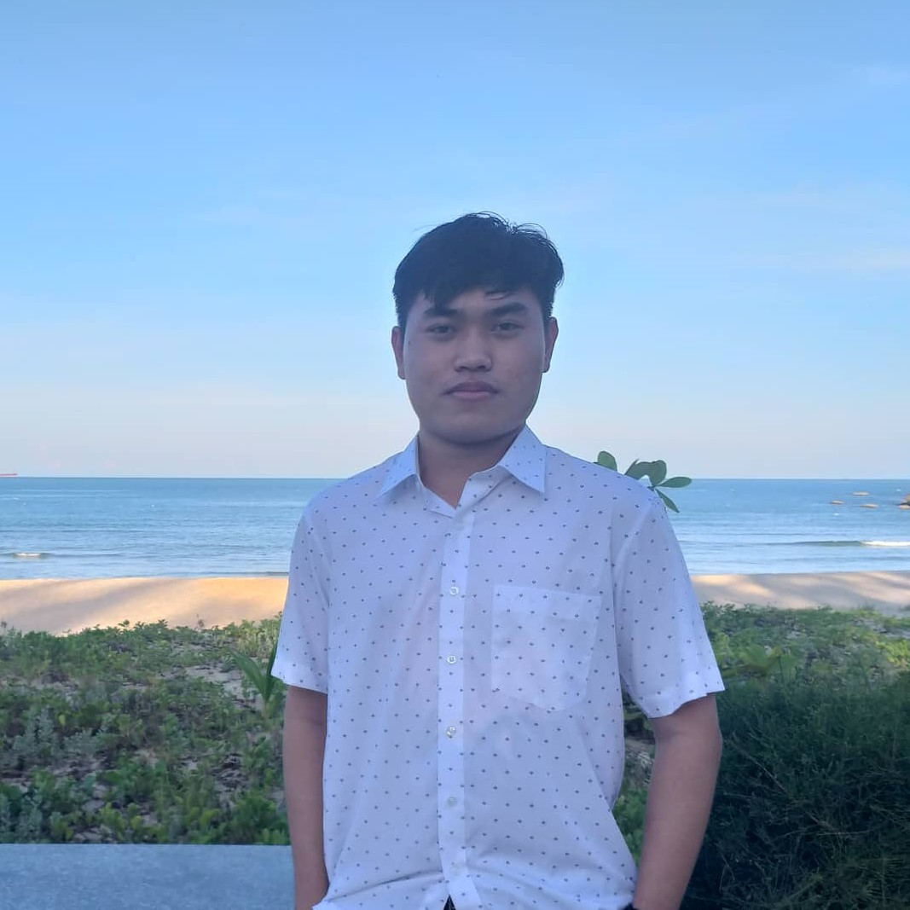
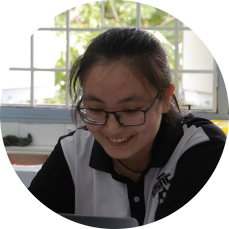

USAC Astrophysics
Research Group
The group investigates the central black holes of galaxies — how they form, how they grow, and how they co-evolve with their host systems — through dynamical mass measurements obtained with the world's leading observatories: the ELT, JWST, HST, ALMA, and the VLT.




Understanding How Black Holes Shape Their Cosmic Hosts
Using the most capable telescopes now available, the group extends the frontier of dynamical black hole mass measurements — from the lowest-mass galaxies of the local volume to the most massive early-type galaxies at cosmological distances. These measurements constrain the co-evolutionary link between black holes and their host galaxies over nearly 13 billion years of cosmic history.
State-of-the-Art Instrumentation
Integral-field spectroscopy with ELT/HARMONI and JWST/NIRSpec, complemented by millimetre interferometry with ALMA.
Mock Observations & Dynamical Modelling
End-to-end simulations of forthcoming observations, combined with dynamical modelling, establish realistic detection limits and inform observing strategies.
International Collaboration
Sustained collaboration with colleagues in Oxford, Lyon, Michigan, and Ho Chi Minh City.